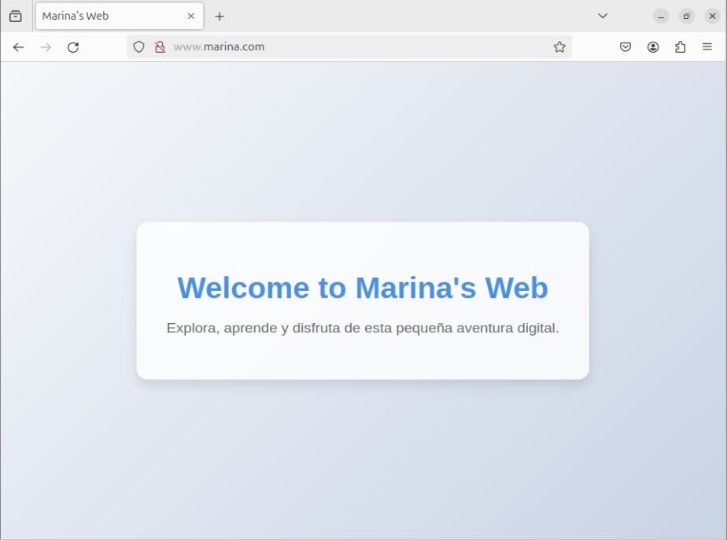

Configuración del servidor web
- Instalación de apache
sudo apt update
sudo apt install apache2
- Creación del index.html
Primero crearemos una carpeta en el directorio /var/www/html para tener el archivo index.html donde editaremos a nuestro gusto la página web sin equivocarnos de índice.
cd /var/www/html
sudo mkdir marina
cd marina
sudo nano index.html

- Creación del archivo de configuración
Ahora crearemos y editaremos el archivo de configuración.
cd /etc/apache2/sites-available
sudo cp 000-default.conf marina.conf
sudo nano marina.conf


Una vez creado y editado el archivo de configuración, habilitamos la pàgina web
cd /etc/apache2/sites-available
sudo a2ensite marina.conf

Antes de poder acceder a ella por el nombre que le hemos dado, en este caso www.marina.com debemos hacer al equipo que la propia máquina pueda resolver el nombre, esto lo especificaremos en /etc/hosts
sudo nano /etc/hosts
192.168.10.50 www.marina.com
Donde:
- 192.168.10.50 --> es la ip de la propia máquina
- www.marina.com --> el nombre que buscaremos en el navegador

- Comprobar el funcionamiento Ahora que ya está configurado vamos a entrar en el navegador y a buscar nuesra página web

Configuración Auth Digest
- Creación del index y habilitar el modulo
Primero crearemos una carpeta llamada digest dentro de la carpeta que teniamos anterirmente creada. Dentro de esta crearemos el index.html y lo editaremos.
sudo mkdir digest
sudo nano index.html
También habilitaremos el modulo que se necesita para poder configurar el auth digest. Y seguidamente reiniciaremos el servidcio de apache.
sudo a2enmod auth_digest

- Creación del archivo de contraseñas
Vamos a crear el archivo donde pondremos las contraseñas de auth digest.
sudo mkdir /etc/apache/digestpasswd
cd /etc/apache2/digestpasswd
sudo touch passdigest
Una vez creado vamos a usar el siguiente comando para añadir el usuario proyecto con contraseña final.
cd /etc/apache2/digestpasswd
sudo htdigest -c access proyecto

- Archivo de configuración
En el archivo de configuración (el que tenemos ya creado y habilitado), tendremos que añadir las siguientes lineas
<Directory "/var/www/html/marina/digest">
AuthType Digest
AuthName "access"
AuthDigestProvider file
AuthFile "/etc/apache2/digestpasswd/passdigest"
Require valid-user
</Directory>
- Comprobar el funcionamiento
Entraremos en el navegador, buscaremos la pagina web pero con una barra y el nombre de la carpeta que hemos creado:
http://www.marina.com/digest